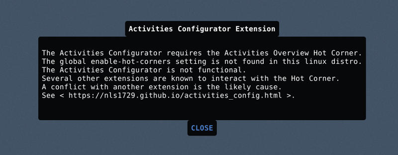

Updated November 11, 2017: Ubuntu 17.10 introduced a modified version of Gnome Shell to provide a 'familiar Unity like experience'. The Activities Configurator extension is not currently compatible with the Ubuntu default session. An updated Activities Configurator compatible with Ubuntu Session in 17.10 will be available soon.
The following applies to Ubuntu 17.10 and any linux distro using Gnome Shell with the Activities Overview Hot Corner global setting (enable-hot-corners).
The Activities Hot Corner is required for proper operation of the Activities Configurator. The Hot Corner is undefined in the default Ubuntu 17.10 Session. The undefined Hot Corner caused an "ERROR" when installing the extension from extensions.gnome.org website. The Hot Corner is undefined because the enable-hot-corners setting is set to false (OFF) in the default Ubuntu Session.
For more details please see the extension README 2017-11-11 Added detection of undefined Hot Corner
The extension has been modified to detect the undefined Hot Corner and not produce an error on installation. The action taken by the extension depends on four factors:
The Hot Corner is not undefined in a distro with or without the enable-hot-corners setting. No action is required.
The extension sets enable-hot-corners to true. The Hot Corner is created. The extension displays the following message:
Since the Hot Corner was removed in the default session by the Ubuntu developers the Hot Corner is disabled on installation of this extension. As noted in the message it can be enabled (or disabled) by the user with the Disable Hot Corner preference. The extension also has a preference, Hot Corner Threshold, which can be used to set the sensitivity of the Hot Corner when it is not disabled. Some users find the Hot Corner is inadvertently activated. Others find it difficult to activate. Some users are able to use the Hot Corner by setting the Hot Corner Threshold. The Hot Corner activation problem is hardware dependent and cannot be solved in all cases by setting the Hot Corner Threshold.
The extension sets enable-hot-corners to true. The Hot Corner is NOT created. The extension displays the following message:
The extension displays the following message:

If you received the "ERROR" indicator and wish to install the updated version of the extension please go to installed extensions page
of the ego website and remove the failed installation by clicking the red X.
Installed Extensions Page
After removing the failed installation, log out and login to restart the session. When you re-install the
you should see the following message.
If you have previously set the Activities Overview Hot Corner to ON the message will not be displayed.
Install Activities Configurator from the Gnome Shell Extension Website
If you find any problems please see Bugs... etc. at Github Projects.